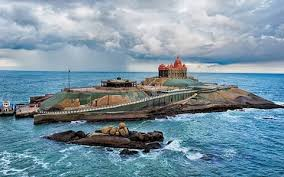
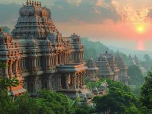
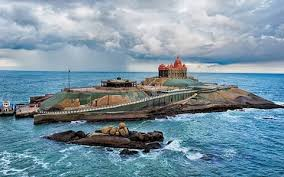
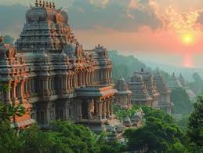
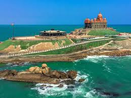
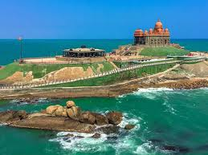

Vivekananda Rock Memorial
Boat ride to a calm rock island with ocean views on all sides.
Kanyakumari marks the meeting point of the Arabian Sea, Bay of Bengal and Indian Ocean. It is one of India's best sunrise spots, with an open horizon and calm early mornings. The city is compact, walkable and known for the Vivekananda Rock Memorial just offshore.
Travellers also visit temples, beaches, viewpoints and the Thiruvalluvar Statue. Many combine Kanyakumari with Trivandrum, Kovalam or Rameshwaram as part of a coastal Tamil Nadu–Kerala trip.
Boat ride to a calm rock island with ocean views on all sides.
133-foot statue of the Tamil poet overlooking the sea.
One of India's most famous sunrise locations.
Whitewashed seaside church with Gothic architecture.
Short ferry ride to the iconic memorial in the middle of the sea.
Wide open horizon with golden light reflecting across the sea.
Ancient coastal temple dedicated to Devi Kanya Kumari.
Simple, walkable routes.
Short trip
Relaxed pace
3–4 days
Walkable to sunrise point, boat jetty and church.
Best for first-time visits.
Sea-view rooms and quiet surroundings on the outskirts.
Good for relaxing weekends.
Simple hotels with quick access to all landmarks.
Suitable for short, low-cost trips.
 





 rajaadhikary058032005@gmail.com8.jpg" alt="Meeting point of seas" loading="lazy">
rajaadhikary058032005@gmail.com8.jpg" alt="Meeting point of seas" loading="lazy">
Quick and practical for coastal visits.